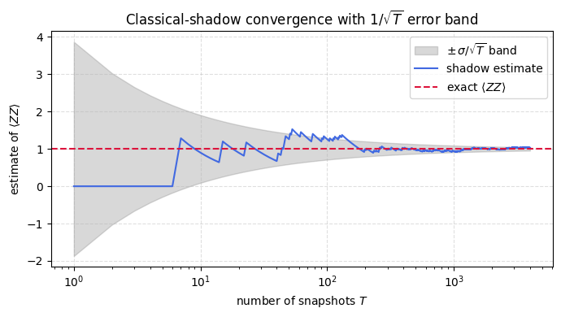

Classical Shadows: Channel Inversion and Tomography
Background
Classical shadows let one predict many observables of an unknown state from a measurement budget set by how local those observables are rather than by how many qubits the system has. In the version used here every qubit is measured in a randomly chosen single-qubit Clifford basis, and the depolarizing channel that this randomization induces on each site is inverted analytically. Each shot then becomes a classical snapshot \(\hat\rho = \bigotimes_j (3 U_j^\dagger |b_j\rangle\langle b_j| U_j - I)\) whose average over shots reproduces the true state, with the single-qubit inverse \(3U^\dagger|b\rangle\langle b|U - I\) as the building block applied independently on every site.
A snapshot is unbiased, meaning its average is the real state, yet on its own it is not a legitimate density matrix, since it can carry negative eigenvalues and a trace away from one. That is acceptable because the snapshot is a classical bookkeeping object rather than a physical state, and it only has to be correct in the average.
What makes the method efficient is how the fluctuations behave. Averaging over \(T\) shots suppresses them as \(1/\sqrt{T}\), and for an observable supported on \(k\) qubits the variance picks up a factor \(3^k\), one factor of three for each single-qubit inversion the estimator has to undo. This shadow-norm scaling does not depend on the system size \(N\), so a local observable stays cheap on a large system while the cost climbs steeply only as the support of the observable grows.
The calculation assembles the full pipeline from random bases through snapshots to estimates and applies it to two-qubit observables on a Bell state, where the running average settles toward the exact value inside its \(1/\sqrt{T}\) error band.
Mathematical background
Classical shadows estimate many observables of an unknown state \(\rho\) from randomized single-copy measurements. Each round applies a random unitary \(U\) from a fixed ensemble, measures in the computational basis to get an outcome \(|b\rangle\), and records the snapshot \(U^\dagger|b\rangle\langle b|U\). Averaging over unitaries and outcomes defines the measurement channel
For random single-qubit Pauli measurements the channel factorizes across qubits and acts on each as \(\mathcal{M}(X) = \tfrac13 X + \tfrac13 \mathrm{Tr}(X)\,\mathbb{I}\), whose inverse is \(\mathcal{M}^{-1}(X) = 3X - \mathrm{Tr}(X)\,\mathbb{I}\), giving the local estimator \(3\,U^\dagger|b\rangle\langle b|U - \mathbb{I}\) per qubit. The statistical cost of an estimate is set by the shadow norm of the observable, which for a \(k\)-local Pauli scales as \(3^k\), so it depends on the locality of the target rather than the size of the system.
Motivation
Classical shadows are the most sample-efficient method for estimating local observables of an unknown quantum state. The key insight is that random single-qubit Clifford measurements induce a depolarizing measurement channel, which can be analytically inverted. This inversion is a direct application of the Haar/design averaging framework:
Averaging \(U^\dagger |b\rangle\langle b| U\) over all single-qubit Cliffords \(U\) and outcomes \(b\) yields a depolarizing channel \(\mathcal{M}\).
The inverse \(\mathcal{M}^{-1}\) gives an unbiased estimator of \(\rho\) from each measurement.
The sample complexity for \(k\)-local observables is \(O(3^k/\epsilon^2)\), independent of system size \(N\).
Exercise
(a) Show that the measurement channel over the single-qubit Clifford group is \(\mathcal{M}(\sigma) = \frac{\sigma + \mathrm{Tr}(\sigma)I}{3}\).
(b) Prove the inverse is \(\mathcal{M}^{-1}(\tau) = 3\tau - \mathrm{Tr}(\tau)I\).
(c) Derive the shadow snapshot: for a measurement outcome \(|b\rangle\) in the Clifford basis \(U\), the unbiased estimator is \(\hat{\rho} = 3U^\dagger|b\rangle\langle b|U - I\).
(d) For \(N\) qubits with independent single-qubit measurements, write the multi-qubit shadow snapshot.
(e) Implement the full protocol and verify on a Bell state.
Solution
Part (a): Deriving the measurement channel \(\mathcal{M}\)
When we measure qubit \(j\) in the basis defined by Clifford \(U\), the possible outcomes are \(|b\rangle \in \{|0\rangle, |1\rangle\}\) with Born probabilities \(p(b) = \langle b|U\sigma U^\dagger|b\rangle\). The post-measurement state in the original frame is \(\tau_b = U^\dagger|b\rangle\langle b|U\).
Averaging over bases \(U\) (drawn uniformly from the 3 Pauli bases, forming a 1-design on the Bloch sphere) and outcomes \(b\):
The inner sum is the quantum-to-classical-to-quantum operation: measure in the \(U\)-basis and prepare the outcome. For a single qubit, this equals \(\mathcal{M}(\sigma) = \frac{\sigma + \mathrm{Tr}(\sigma)I}{3}\).
Proof via Pauli decomposition: Write \(\sigma = \frac{1}{2}(\mathrm{Tr}(\sigma)I + \vec{r} \cdot \vec{\sigma})\). For each Pauli basis \(P \in \{X, Y, Z\}\):
Since \(\sigma = \frac{1}{2}(\mathrm{Tr}(\sigma)I + \vec{r}\cdot\vec{\sigma})\), we get \(\mathcal{M}(\sigma) = \frac{\sigma + \mathrm{Tr}(\sigma)I}{3}\). \(\quad \checkmark\)
Part (b): Channel inversion
We need \(\mathcal{M}^{-1}\) such that \(\mathcal{M}^{-1}(\mathcal{M}(\sigma)) = \sigma\). Let \(\mathcal{M}^{-1}(\tau) = 3\tau - \mathrm{Tr}(\tau)I\). Check:
(In the second line we used \(\mathrm{Tr}(\sigma + \mathrm{Tr}(\sigma)I) = \mathrm{Tr}(\sigma) + 2\mathrm{Tr}(\sigma) = 3\mathrm{Tr}(\sigma)\), so the trace of the argument is \(\mathrm{Tr}(\sigma)\).)
Part (c): The shadow snapshot
For a single measurement with Clifford \(U\) yielding outcome \(|b\rangle\), the post-measurement estimator is \(\tau = U^\dagger|b\rangle\langle b|U\) with \(\mathrm{Tr}(\tau) = 1\). Applying the channel inverse:
By construction, \(\mathbb{E}[\hat{\rho}] = \mathcal{M}^{-1}(\mathcal{M}(\rho)) = \rho\): the shadow is an unbiased estimator.
Note: \(\hat{\rho}\) is not a valid density matrix (it can have negative eigenvalues and trace \(\neq 1\)). That’s fine, it is a classical data structure that gives unbiased estimates when averaged.
Part (d): Multi-qubit shadows
For \(N\) qubits with independent single-qubit measurements using Cliffords \(U_1, \ldots, U_N\) and outcomes \(b_1, \ldots, b_N\):
Sample complexity: To estimate a \(k\)-local observable \(O\) acting on \(k\) qubits:
\[
\mathrm{Var}[\mathrm{Tr}(O\hat{\rho})] \leq \frac{\|O\|_{\mathrm{shadow}}^2}{T}, \qquad \|O\|_{\mathrm{shadow}}^2 \le 3^k\,\|O\|_\infty^2 \ \text{for a } k\text{-local } O,
\]
where \(T\) is the number of shadow snapshots. The factor \(3^k\) (not \(3^N\)!) in the shadow norm is the crucial advantage: the sample complexity depends only on the locality of \(O\), not on the system size.
%matplotlib inlineimport matplotlib.pyplot as pltimport numpy as np# Convergence of the shadow estimator for <ZZ> on the Bell state.np.random.seed(0)T_max =4000single_shots = np.array([np.trace(ZZ @ shadow_shot_v2(rho_bell, 2)).realfor _ inrange(T_max)])T = np.arange(1, T_max +1)running = np.cumsum(single_shots) / Tsigma = single_shots.std()band = sigma / np.sqrt(T)plt.figure(figsize=(7, 4))plt.fill_between(T, exact_ZZ - band, exact_ZZ + band, color='gray', alpha=0.3, label=r'$\pm\,\sigma/\sqrt{T}$ band')plt.plot(T, running, color='royalblue', lw=1.5, label='shadow estimate')plt.axhline(exact_ZZ, color='crimson', ls='--', label=r'exact $\langle ZZ\rangle$')plt.xscale('log')plt.xlabel('number of snapshots $T$')plt.ylabel(r'estimate of $\langle ZZ\rangle$')plt.title(r'Classical-shadow convergence with $1/\sqrt{T}$ error band')plt.legend()plt.grid(True, ls='--', alpha=0.4)plt.tight_layout()plt.show()

Takeaway
The single-shot snapshots are unbiased but individually unphysical, carrying negative eigenvalues, yet their running average converges to the true expectation with error falling as \(1/\sqrt{T}\). For \(k\)-local observables the variance scales as \(3^k\) independent of \(N\), which is what makes shadows practical for local properties of large systems.
References
Huang et al., Predicting Many Properties of a Quantum System from Very Few Measurements, Nature Physics (2020).
Brydges et al., Probing Rényi Entanglement Entropy via Randomized Measurements, Science (2019).
Vermersch et al., Probing Scrambling Using Statistical Correlations between Randomized Measurements, Physical Review X (2019).
Płodzień, Information Scrambling, Quantum Chaos, and Haar-Random States, lecture notes (2025). arXiv:2511.14397